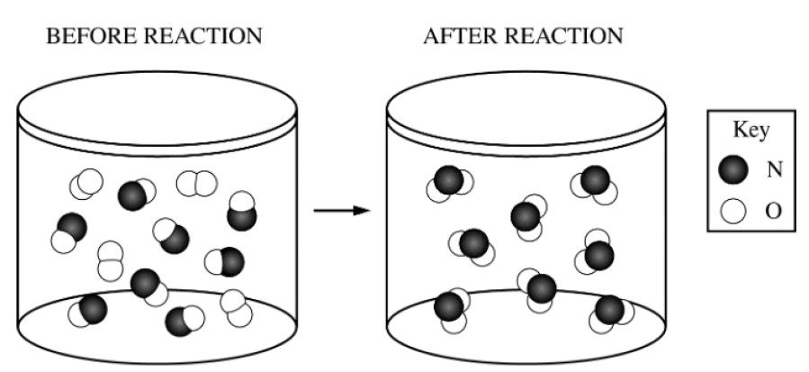

The reaction between \(\ce{NO(g)}\) and \(\ce{O2(g)}\) to produce \(\ce{NO2(g)}\) in a rigid vessel is represented in the diagram above.
The pressure inside the container is recorded using a pressure gauge. Which of the following statements correctly predicts the change in pressure
as the reaction goes to completion at constant temperature, and provides the correct explanation?
The pressure of a container is based solely on the number of gas molecules if volume and temperature are held constant.
$$ PV=nRT $$
$$ \frac{P}{n} = \frac{RT}{V} $$
$$ \frac{P}{n} = k $$
$$ P \propto n \text{ if } V, R, \text{and } T \text{ are constant} $$
The pressure of the container decreases since there are less molecules exerting pressure on the walls of the container.
Since the temperature is constant, the average speed of the molecules will stay the same.